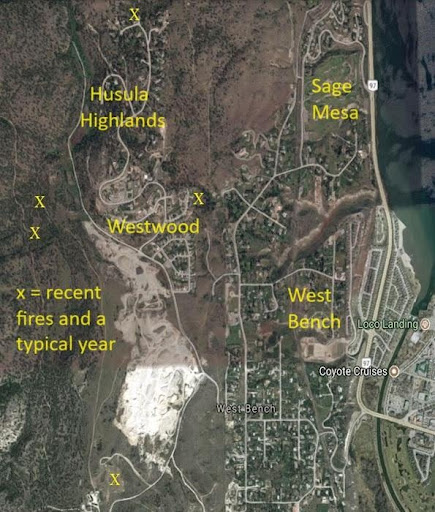
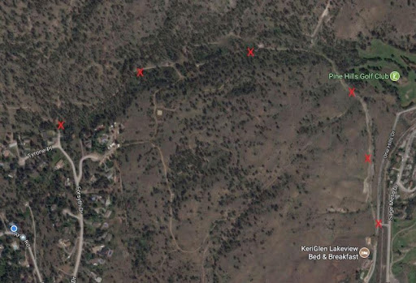
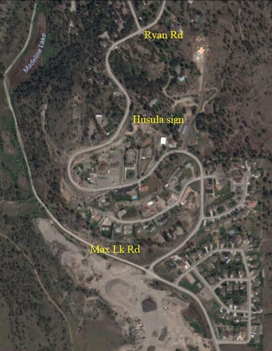
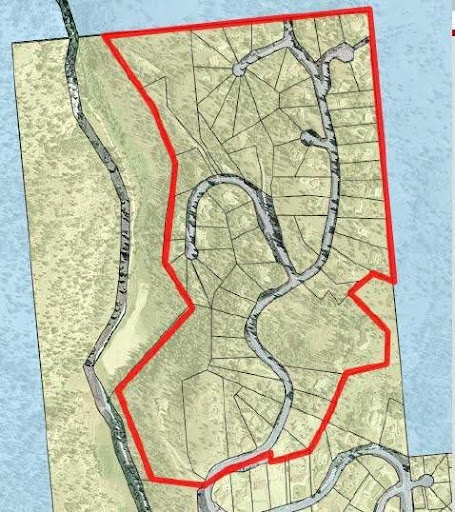
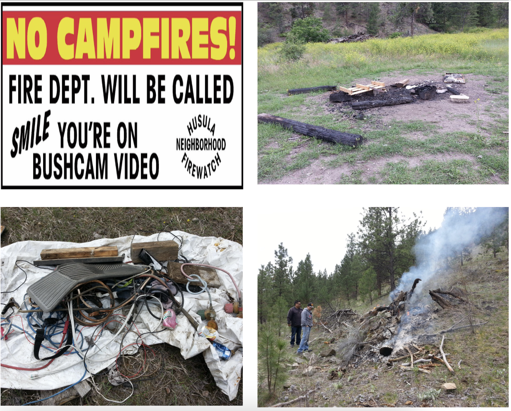

Wild Fire Warning System
Background
Husula Firewatch was established in 2016 – the year that Fort McMurray burned – after numerous fire threats around the perimeter of our neighborhood. Our efforts to mitigate those risks and establish a volunteer fire warning system led to Husula Highlands being certified as a FireSmart community in 2018. The Wild Fire Warning System (WFWS) began with 14 houses on Ryan Road and then spread through the whole neighborhood of 66 houses or so. We have used Florida-based dialmycalls.com to deliver voice and text fire alerts for about 25 fires so far.
Working together with Westwood neighborhood residents on fire-related concerns – such as the gating of Max Lake Road to greatly reduce its associated fire hazards – led to extending our fire warning system to Westwood as well and doubled the number of phones signed up. Westwood provided two system operators. Then requests were received to extend the warning system to West Bench and Sage Mesa as we are all contiguous neighborhoods. Or one big west side of the lake neighborhood now known as Greater West Bench. We have gone from the initial 14 phone signups to 470 as of December 2023. Our fire alert messages reach about 1000 people at present. The WFWS is a volunteer effort funded by occasional voluntary donation fundraisers. All funds raised go to cover dialmycalls.com costs.
How it Works
If you spot a fire within the area of our four neighborhoods or the adjacent Penticton Indian Band Reservation, phone 911 for Penticton Fire Department to report the fire. (If on PIB land, Penticton Fire Dept will contact the Band’s Fire Dept.) Then call a WFWS operator to initiate a fire alert or Emergency Fire Warning message. If the first number is busy or no answer, we may already be dealing with the fire so work your way down the list until the fire has been reported – just to be sure. You may be the first person to spot a fire. Please be the first to report it as well. Minutes matter when it comes to yet another excellent rapid response from the Fire Depts or BC Wildfire.
WFWS operates year round and 24/7. The volunteer operators are:
| Peter Lindelauf | 250-770-9095 | Husula fire scout and lead system operator / landline |
| Matt Taylor | 250-488-4810 | Westwood / cell |
| Derek Gillespie | 250-488-9422 | Husula / cell |
| James Rutledge | 250-719-7263 | Westwood / cell |
| Peter Lindelauf | 250-486-4942 | Husula / cell |
When a fire is reported to WFWS, one of our members will quickly drive to the site -- or a good view of the reported fire -- to verify the location and assess the level of threat. Another operator will be standing by to generate a text and voice message as promptly as possible. (It takes three or four minutes for all phones signed up to receive alerts.) We try to send out a fire alert within 15 minutes if possible and follow up with further messages (as necessary) until the fire is out. There are typically three messages per fire. If a fire is threatening to burn out of control, we will broadcast an Emergency Fire Warning.
Opting In to Receive Fire Alerts and Emergency Fire Warning Messages
Our current list of 470 system users have signed up to receive fire alert messages by text and voice message in freely providing their phone number and personal info strictly for fire alert purposes. You can opt out at any time by replying to a text or by contacting Kelly Arsenault directly at bcgirl407@gmail.com. To opt in, please email Kelly with a name, phone number, street address, and email address for each phone. You may sign up several phones per household. You will receive occasional WFWS email newsletters during the fire season. Your contact info and email address will be kept private and confidential.
Please remember that our WFWS is a volunteer group that we run year round for the benefit of our neighbors and our own households. If you have appreciated this service, please do your part by phoning us to report fires as quickly as possible. That’s our best line of defense in coping with the reality of living in a high fire hazard area -- being neighborly and acting for the well-being of all.
Peter Lindelauf
Wild Fire Warning System
4 December 2023
Note: the following document provides further background information about FireSmart efforts and things that we did anyway as we were already pretty smart. The RPF who certified Husula said that we were the most proactive neighborhood he had encountered in his BC-wide Fire Smart travels.
Husula Firewatch Newsletter revision and update Sept 2017/Dec 2023
The Summer of Close Calls
Since spring (2017), we have had five significant fires burning to the south of Husula Highlands. Fortunately for us, during the most threatening Westwood fire, the wind was blowing from the north and away from Husula. The grasslands fire near the PIB Administration buildings was initially spread by east wind and scattered Ponderosas were crowning. Luckily, the fire was quickly contained before it moved up onto the hillside as the wind shifted to gusts from the south—blowing our way. Big thanks from the residents of Husula to BC Wildfire (air support), PIB Fire Dept, and the Fire Depts of Penticton, Kaleden, and Naramata, for expertly dealing with the fires shown at right. In the trails area, north of Husula, one campfire was reported and dealt with about 30 feet beyond a No Campfire sign. Another small grass fire was reported above the railway bed and Pine Hills golf course. We average 3-4 fires per year.
Auto Dial Fire Warning System
Wendy Barlow of the Anarchist Mountain FireSmart group (185 houses versus 66 in Husula) was very helpful in relating their approach to Evacuation & Warning systems and pointed us in the right direction. dialmycalls.com is based in Jupiter, Florida but was fully operational during Hurricane Irma thanks to the Cloud, as confirmed. Credits are purchased in advance and each credit = one voicemail to one house. We opted for voicemail over text message because the majority of household signups are using their land line number for fire warnings. Broadcasting a message to all 66 houses will cost just over $4.00 – or 6 cents per house. [Dec 2023: in the process of verifying a toll-free number to be able to send text messages via dialmycalls.com.]
At present, four people (all on Ryan Rd) are able to activate the system and broadcast a message. Everyone practiced with a personal account and then did a timed test. (It takes 2-5 minutes to prepare and broadcast a message.) Two people also have the smartphone app in event of ever having to activate the system from outside of the neighborhood. For a bit more redundancy, we need two more people in the upper part of Husula willing to volunteer as system activators. The website user interface is very clear and easy to use. Please contact Peter at 250-7709095. [Dec 2023: we have 4 operators, 2 from Husula and 2 from Westwood. Kelly takes care of data entry on behalf of West Bench/Sage Mesa.]
The PIB grasslands fire was the first real life use of the system. This made for quite a gathering at the lookout. A timed test of 25 houses was completed before the Husula account was set up and it took about three minutes to notify all. When the whole neighborhood has signed up, we will run another test and ask people to record the test message phone call time received. A number of people have asked to add a second number (ie, cell phone if they’re away from home). Every number added increases the time it takes to broadcast a warning. If our neighborhood is on fire, every minute matters and the primary purpose of this system is warning the whole neighborhood as quickly as possible. A timed test will allow us to determine whether or not we will restrict system signup to one phone number per household. The full system timed test is scheduled for Thursday 28 September at 7:00 pm. After the test, a new email will allow reporting of test message time. Your participation will be helpful and useful. To date, almost the whole neighborhood has signed up – with the exception of just a few stragglers. [Dec 2023: even with the addition of hundreds of phones to the system, it still only takes about 3 minutes for all fire messages to be sent.]
Don’t confuse normal gravel pit operations...
Don’t confuse normal gravel pit operations (cloud of brown dust) or Peters Bros plant operation (plume of blue/gray smoke) with a real fire. Verify and report. Phoning 911 because “there’s smoke in the air” would have had their phones ringing off the hook this summer with large fires to the south, west, and north of us. If – in already smoky conditions or not – you suspect a fire, drive up to the trails area or Max Lake Canyon or down to the flats by Westhills Aggregates where you can see the whole mountainside. Take your phone with you. While everyone is on edge in smoky conditions, we still want to avoid false alarms or jumping the gun.
After a broadcast, the Auto Dial website displays a report showing which numbers received the call, answering machine messages left, and who didn’t answer the phone at all. This is rather pertinent information in the event of an actual evacuation. Another big advantage of the system is that -- working with the Police and/or Fire Dept – we could activate a Prepare to Evacuate or Evacuation message at their request. This would save an awful lot of door knocking throughout the neighborhood. In most situations, the Fire Depts (Penticton and PIB) will be responding as will Police and possibly BC Wildfire. This gives us plenty of time to send out a Potential Threat or a Prepare to Evacuate broadcast. [Dec 2023: Evacuation is the Fire Chief’s call but in the event of getting caught off guard by spreading fire immediately threatening one or more neighborhoods, we won’t hesitate to send out an Emergency Fire Warning broadcast.] Given emergency response time from Penticton versus the time it would take for Husula to be overrun by fire, we wouldn’t have time to wait to be evacuated and
Given emergency response time from Penticton versus the time it would take for Husula to be overrun by fire, we wouldn’t have time to wait to be evacuated and escorted from Husula. When asking Deputy Fire Chief, Chris Forster, about triggering an emergency evacuation unilaterally, his response was, “If you have a fire Evacuation warning system, why wouldn’t you use it?”
[Note: As of 2023, we will either send out fire alerts or Emergency Fire Warnings. An Evacuation Order is the Penticton Fire Chief’s call. An Emergency Fire Warning is intended to relay that a fire out of control and spreading rapidly. You should prepare to evacuate or – to be safest – leave as quickly as possible.]
Evacuation
As noted, an Evacuation Order is the Fire Chief’s call but if you are voluntarily fleeing one of our neighborhoods, here are some things to consider...
The possibility of having more than one evacuation route has been considered since spring of 2016 and was also brought up by concerned residents at the FireSmart block party. As all are aware, there is one road in and out of Husula – Forsyth Dr down to Bartlett. Two Firewatch members recently walked the “back door” route below to consider whether it would work as a secondary emergency exit. In short, no. The lower reaches of the road (near Pinehills golf course) are drivable but brushed in with tinder dry vegetation. The uppermost portion where the roadbed climbs up onto the main trails’ area bench is too steep (>35 % grade). Remember, we have about 150 people and 66 or so vehicles. A safe route would require grading the whole road to remove brush, a switchback to circumvent the steep stretch, and further bulldozer work through the trails area to create an all season road.
This could entail thousands of dollars in construction costs. Let alone having to request permission from PIB to do this work on their land with our presumptuous plan in hand. Apart from that, it doesn’t make sense to attempt to flee a forest fire by going deeper into the forest that’s burning behind you while hoping to skirt it. This photo shows the route (red X) in question. Evidently, the lower reaches of the road were built for a subdivision that never materialized. In any case, not a viable option or the best strategy for evacuation purposes.
Please entertain a hypothetical worst case scenario while taking comfort in the fact that Husula is about 40 years old as a neighborhood IN the forest. A non-resident idiot (no one we know) has tossed a burning cigarette from his vehicle down by Peters Bros and heads into town oblivious to the fact that he’s started a grassfire behind him. With a weather change, winds are gusting from the south. The grassfire is driven toward Max Lake canyon and up the switchbacks slope. Unfortunately, it’s 11 PM and a lot of people are in bed. Someone is going to call 911 pretty quickly all the same. Before the Fire Dept arrives, the fire has spread up the slopes and Ponderosas are starting to crown at the entry to Max Lake canyon. At the sound of sirens and the sight of flames coming up the slope someone on the edge of Husula will contact an Auto Dial system activator. Wouldn’t you?
[Dec 2023: Funny you should ask. In the fall of 2022 we had a housefire on the lower slopes of Westwood in the middle of the night and – in the panic – no one phoned WFWS to report the fire. Husula slept through it -- fire trucks and all. Since then, we have had multiple people phoning to report each fire. Phone 911 and then WFWS.]
As the switchbacks area is quite open and doesn’t have many Ponderosas, it’s Max Lake Rd where the Ponderosas crown as the fire burns rapidly uphill driven by the wind. Ryan Rd is threatened with being overrun by fire in 4-5 minutes. [Dec 2023: as noted above, an Emergency Fire Warning message is broadcast.] By this time, some houses may be burning on the slopes and crowning trees continue to burn but the telephone poles are still standing – as are the burning pines. At this point, there is no reason to expect that a falling tree or telephone pole and lines would block the road. Our imperative is to quickly leave the neighborhood. While the switchbacks area may be on fire – and even the grasslands – the gravel pit won’t be. We have all witnessed on TV what the residents of Fort McMurray drove through to escape a fire calamity. In our own worst case scenario and according to BC Wildfire estimates, a forest fire could burn up the slopes from the foot of the hill and overrun all of Husula in about 20 minutes. Especially if driven by strong wind. The above photo shows how wide open the switchbacks area is – once we get out of the Ponderosa forest. It’s reasonable to expect that we will retain phone lines and internet in the early stages of a crowning fire and be able to broadcast an Emergency Fire Warning message. [Dec 2023.] Let’s hope that this scenario never occurs. Hasn’t yet. But, if it does, at least we have done everything we can do as a neighborhood to prepare for it. And have all given thought to what to do. Enlightened self-interest includes the safety and well-being of all neighbors—and our much loved horses, dogs, and cats.
Things to consider:
- Have a ‘go-box’ packed and ready during fire season.
- Pet crates quickly accessible, if you need them. Make a mutual pet pickup arrangement with a neighbor or two in case you find yourself unable to return to Husula as with the recent Westwood fire road closure. You can’t expect to reenter a burning neighborhood to rescue a pet.
- Assist senior neighbors who may need help. The Firewatch group has some ‘buddy systems’ established, to that end.
- Make an ‘OUT’ sign (cardboard box flap and felt pen) to leave at your gate or at the foot of your driveway and weighed down with a rock. This could spare some young first responder risking his/her life to pound on the door of one of our empty burning houses due to a lack of forethought on our part.
- With the Auto Dial system report, we may be able to assist the Police or Fire Dept in identifying which doors do need knocking on but that may be optimistic in the midst of evacuees heading out while emergency services are entering the neighborhood. Exit single lane only. Without speeding, exit as quickly as possible. Do not stop, slow down or pause to take video for Castanet. Keep a safe space between vehicles.
- Maybe leave your canvas-covered boat behind to avoid the possibility of towing a burning gas bomb. Memo to self.
- Take one vehicle – there will be 65 other vehicles hoping to get out as quickly as possible. Additional vehicles will increase the evacuation time for all involved -- including you.
- If – perish the thought – we ever do have to evacuate, the usual and likely congregation point is 325 Power St, Penticton (main entrance of the Pool/Convention Center parking lot). Check the RDOS website’s EOC page at that time. Register with Emergency Services to confirm that you are safe and sound.
FireSmart Community Certification Process
The FireSmart block party this spring (2017) was a big success. About 60 people turned out to hear speakers (PIB, Fire Dept, Police, FireSmart consultant) and add their names to the Husula Firewatch email newsletter list. Some homes in the vicinity were also assessed. Andy Low, RPF, has advised us that we can expect to see the Husula FireSmart report in the very near future and be one step closer to FireSmart certification for our neighborhood.
Husula Neighborhood Firewatch
Last year while Fort McMurray was burning, a dozen neighborhood residents met to form a firewatch group due to a rash of potential forest fire incidents in or immediately adjacent to our neighborhood. Our situation is probably unique in Canada in that with the return of expropriated railway land to PIB, our neighborhood, Westwood, and much of West Bench are effectively encircled by Reservation land.
Please be aware that when using the trail network north of our neighborhood you are – wittingly or not as there are PIB signs posted – trespassing on PIB land. Before the old signs were destroyed, it was understood by neighborhood residents that these trails were for hiking, horse riding, or mountain bikes. NOT dirt bikes or ATVs. NOT archery practice ranges or driving golf balls into the grasslands. Good defenses make good neighbors. Please treat PIB land with the respect it deserves. In the past couple of years, the use of the trail areas by non-neighborhood residents has greatly increased.
Other fire-related incidents:
- Stolen vehicle set on fire in Max Lake canyon.
- Several bonfire parties on Max Lake Rd that Penticton Fire Dept responded to.
- A number of campfires left burning in the trails area north of Husula and put out by neighborhood residents.
- Lightning strike.
- Fireworks being shot off in a tinder dry Ponderosa forest.
- Open burning without a permit in gusty wind conditions.
- “Smelting” fires at illegal dump sites on PIB land.
As well, Bartlett Rd (bone dry grassland), Forsyth Dr (dry grassland with Ponderosa and some Douglas Fir), and the lookout area are littered with burned out cigarettes that have been stupidly tossed from vehicles. The map above shows the FireSmart certification program inclusion area. Please note that our greatest forest fire risks come from Max Lake canyon (west) and the grasslands (south and east) of Husula. [Dec 2023: Gating Max Lake road has reduced that fire hazard by about 95%.] Fire above us (north) is perhaps a lesser threat as fires tend to burn uphill but burning embers could be spread in any direction by strong winds.
The Husula Firewatch group paid for and erected the NO CAMPFIRE signs at the accesses to the trail area north of Husula and on Max Lake Rd. With the cooperation of Peters Brothers, the bonfire party pit on Max Lake Rd was cleaned up and a hundred pounds of nails as well as charred timbers were hauled to the Campbell Mtn dump, which at first balked at receiving them in case they still posed a fire risk. Since the signs were put up, we’ve had just one (1) reported campfire incident in 2017.
Note—If you come across a burning campfire in the trails area, don’t hesitate to call Penticton Fire Dept. They will, in turn, notify the PIB Fire Dept. Avoid personal confrontation – this is PIB matter. Please guide the PIB Fire Dept crew to the site, if possible, so the campfire can be put out.
Our best line of defense is being aware of the inherent risks due to living in a forest, remaining vigilant during fire season, and looking out for each other. As well as being good friends and neighbors of PIB in respecting the stewardship of their land. [Note: Again, the gating of Max Lake Road in 2021 has greatly reduced the fire hazard on the west side of Husula and Westwood.]
Fire Protection Bylaw No. 2898, 2020 (Area F)
In short, patio barbecues, screened fire pits, etc, are allowed. Open burning of brush and yard waste is not permitted April 15 to October 15 each year – BC’s official fire season. To get a permit, you can access the Burn Authorization application on the RDOS website and select Permits & Licences. You can also access the Public Parcel Viewer to view Fire District Boundary locations. Please note, depending on conditions, burning season may end earlier at the discretion of the local fire chiefs.
On the other hand, there is no good reason to open burn in Husula. We have yard waste pickup. It’s a short trip to the dump where organics can be dumped for free. If you’ve got a bunch of Ponderosa limbs from beetle killed trees, for example, a chipper can be rented at low cost for a day and the chips used as mulch. Why risk accidentally setting Husula on fire? The same goes for burn barrels and fireworks.
Burning Wood for Heat
As we don’t have natural gas service in the neighborhood (yet), most households rely on electric and/or wood heat. [Dec 2023: Husula and Westwood are now natural gas neighborhoods.] Many tons of firewood are burned every winter. Inspect your chimney before starting
As we don’t have natural gas service in the neighborhood (yet), most households rely on electric and/or wood heat. [Dec 2023: Husula and Westwood are now natural gas neighborhoods.] Many tons of firewood are burned every winter. Inspect your chimney before starting winter burning. Clean your chimney -- or have it cleaned -- annually. It’s an easy DIY job. Burning dry, seasoned firewood leaves very little creosote in your chimney and its cap – and mitigates the risk of a chimney fire due to creosote buildup. Looks like there may be something of a dry firewood shortage this fall due to forestry operations being shut down during the high fire hazard period. Avoid buying or burning ‘wet’ wood. Try to have two winters’ supply of wood on hand.
Pending efforts
The Firewatch committee is also addressing the following issues due to the greatly increased public use of Max Lake Rd and the trails area by non-neighborhood users, and prior incidents of open burning:
- More wildfire signage (ie, Use Your Ashtray, HIGH Fire Hazard, etc).
- Possible neighborhood-specific year round open burning ban if FireSmart-ness does not prevail and open burning occurs without permits. Fire Dept WILL be called. And in the event of fireworks displays.
- Gate Max Lake Road. [done]
Firewatch Contacts
Please feel free to contact the members of the Husula Firewatch committee with any questions, concerns or suggestions or if you want to join the committee. Thank you from us – your friends and neighbors – for your attention to these matters. Hats off to Husula Highlands for being “…reclusive – but friendly!” and smart about fire.
- Dave Birkett davebirkett66@gmail.com 250-492-0998 (Fire Smart)
- Peter Lindelauf peterlindelauf@gmail.com 250-770-9095 (Wild Fire Warning System)
Husula Neighborhood Firewatch founding members:
Anthea Bryan, Claire Hawrys, Peter Lindelauf. Thanks to Lorne McDonald (bonfire pit) and Jim Bryan (signage). Thanks to Randy Prime for his work on the block party and Auto Dial system mailbox signs. Thanks to Dave Birkett for acting as committee chair and guiding the Firewatch group through FireSmart certification. Peter Lindelauf established and manages the Wild Fire Warning System.
Sept 2017 newsletter written and revised by: Peter Lindelauf. Reviewed by: Dave Birkett, Al Hawrys, Derek Gillespie. Revised by Peter Lindelauf December 2023.
Also reviewed in 2017 by and with thanks to: Mark Woods (RDOS Emergency Operations), Chris Forster (Penticton Deputy Fire Chief), and Andy Low, RPF, (FireSmart consultant).